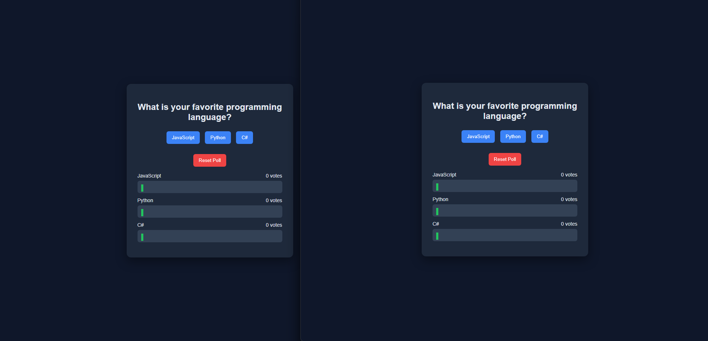
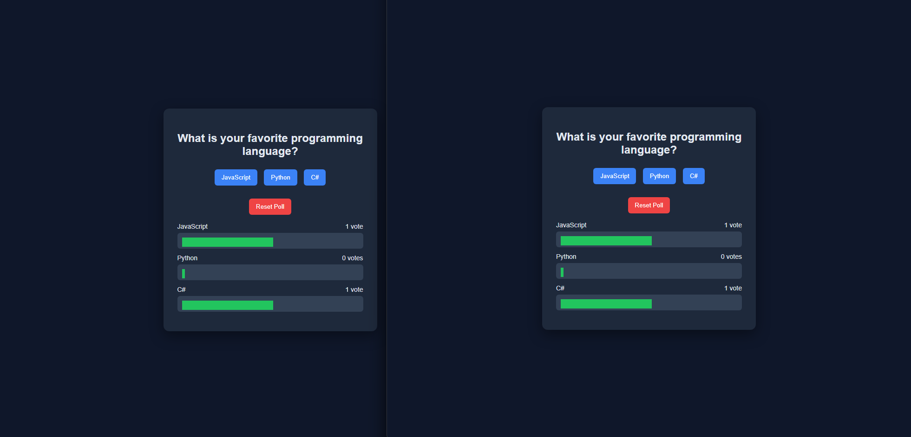
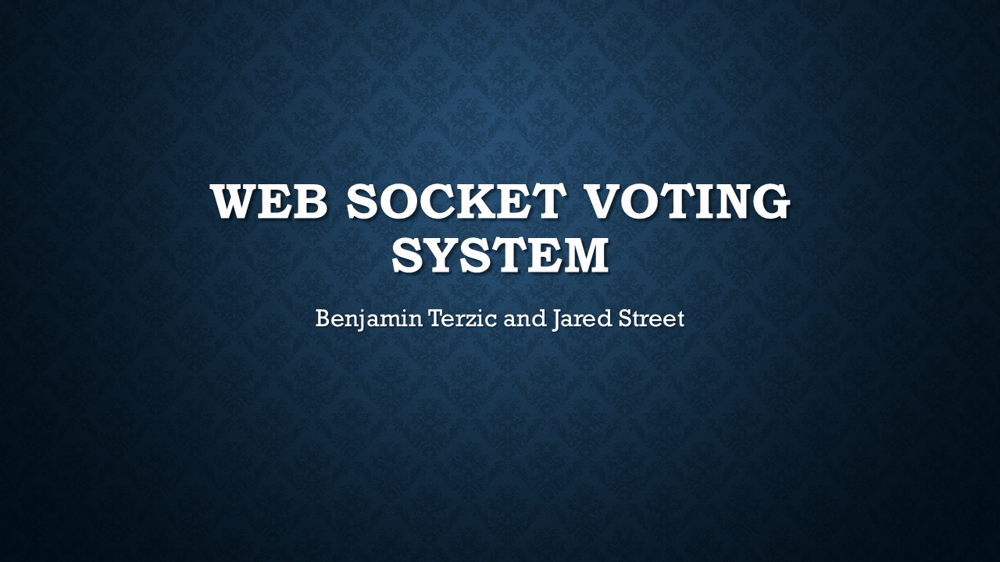
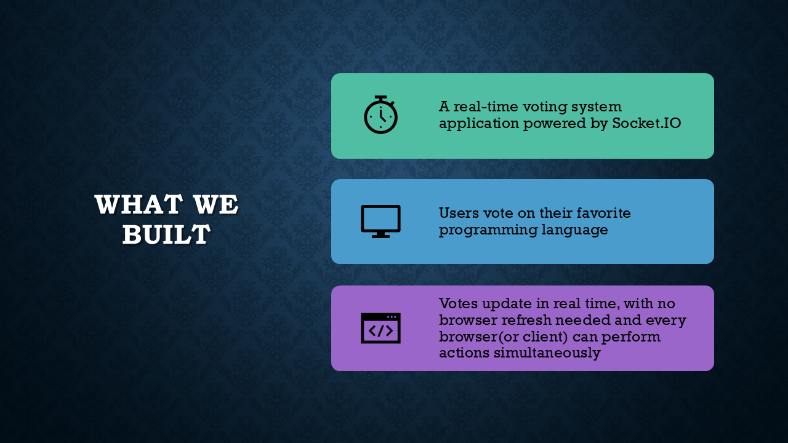
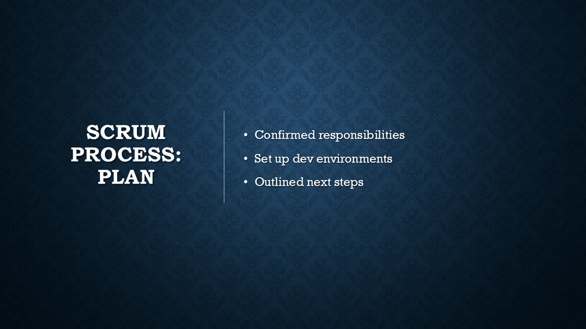
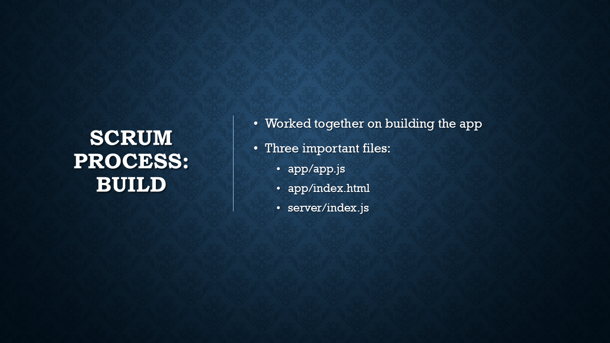
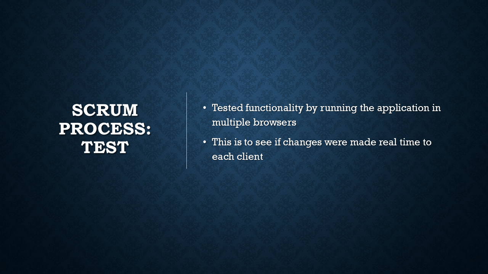
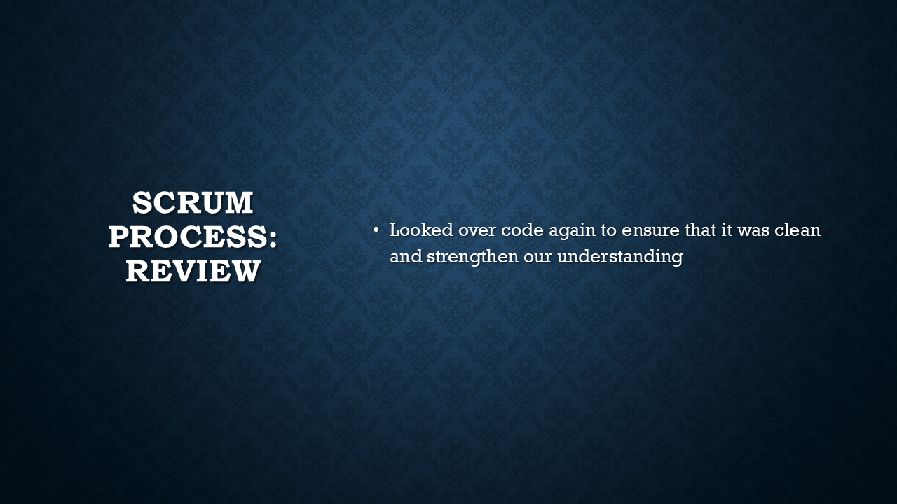

The Real-Time Voting System is a Node.js and Socket.IO project built for CIS 266. The application allows users to vote for their favorite programming language and see the poll results update instantly in the browser. Instead of requiring a page refresh, the server broadcasts updated vote totals to every connected client in real time.
The project separates the client and server logic into different folders. The client side contains the HTML page, CSS styling, and browser JavaScript used to send votes and render result bars. The server side uses Node.js to serve the static files, maintain the vote state, listen for Socket.IO events, and push updated results back to all connected users.
This sample shows the Socket.IO server logic for the voting system. When a user connects, the server sends the current vote totals. When a vote or reset event is received, the server updates the vote state and broadcasts the new results to every connected client.
// Socket.IO setup
const io = require('socket.io')(server, {
cors: { origin: '*' }
});
// Voting state
let votes = {
JavaScript: 0,
Python: 0,
'C#': 0
};
// Handle socket connections
io.on('connection', (socket) => {
console.log('User connected');
// Send current results immediately
socket.emit('updateResults', votes);
// Handle vote
socket.on('vote', (option) => {
if (votes[option] !== undefined) {
votes[option]++;
io.emit('updateResults', votes);
}
});
// Reset poll
socket.on('reset', () => {
for (let key in votes) {
votes[key] = 0;
}
io.emit('updateResults', votes);
});
});This code represents the main real-time communication pattern used in the project: clients emit events to the server, the server updates shared application state, and Socket.IO broadcasts the new state back to all connected clients.







